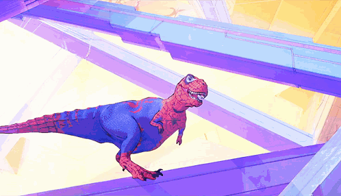

SOBRE SPIDERMAN

Peter Parker es la identidad real del hombre araña. El es un niño de Nueva York
que fue picado por una araña radioactiva, esa picadura le dió sus poderes.
Sus poderes mas importantes son:
- Fuerza aumentada
- Velocidad aumentada
- Reflejos y agilidad mejorados
- Balance aumentado
- Factor curativo
- Trepar muros
- Sentido arácnido
HISTORIA
Spider-Man es un super heroe creado por los historietistas Stan Lee y Steve Ditko para Marvel Comics.
Su primera aparicion es en el año 1962 en "Amazin Fantasy #15".
Peter Parker es su nombre real y es un niño huerfano criado por su tia May y su tio Ben en Nueva York.
Spider-Man es considerado como uno de los mejores personajes de todos los tiempos, cuya popularidad e influencia lo ha llevado a
ser adoptado por Marvel como su mascota, además de ser el superhéroe más redituable de la industria cuyos ingresos excedieron
los veinticinco mil millones USD en 2018
DATOS CURIOSOS
- En los comics Peter Parker mide 1,78 metros y pesa 76 kilogramos.

- Tuvo un crossover con Superman en los años setenta y también tuvo dos con Batman.
- En la película spider-verse existe una version T-REX de spiderman
- La popular frase del tío Ben estuvo inspirada en un discurso de Franklin D. Roosevelt.
- En los comics los padres de Peter Parker, Richard y Mary eran agentes de SHIELD
- Las telarañas de Spider-Man se disuelven después de una hora.
- Se consideraron los nombres Insect-Man y Fly-Man, aunque finalmente se llamó Spider-Man.